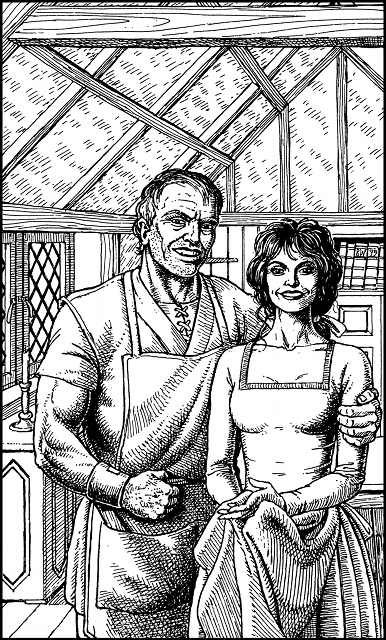

115
You follow Hulsta to the rear of his shop and out through an open door that gives access to a walled yard. At the end of this yard stands a large, timber-framed, two-storey building. The lower floor is a workshop and the upper level is where Hulsta and his wife live. You climb a flight of iron steps to the door of their living quarters, and Delissa greets her husband with a broad smile the moment he appears. Her smile quickly fades, however, when she sees you following behind.
‘Why’d you bring him up to the parlour? Can’t y’keep shop business downstairs where it belongs?’ complains Delissa.
‘Now, don’t go taking offence, my dear,’ replies Hulsta, soothingly. ‘He’s not what he seems. He’s the one we’ve been waiting for. He’s Gwynian’s man—a Kai—all the way from Sommerlund.’
‘My lord, please forgive me,’ says Delissa. ‘Pay no heed to what I said. I’m greatly honoured to meet you.’

‘And so too am I,’ echoes Hulsta, enthusiastically, ‘for you have arrived not a moment too soon.’ He asks why it is that you are dressed as an Eldenoran scout, and you take time to recount the events of your difficult journey to Duadon. When you have finished your account, Hulsta informs you of recent developments.
‘The numbers of Vorka leaving Skull-Tor have greatly increased during the last seven days. Vandyan’s power grows stronger by the hour,’ he warns. ‘My lord, you must enter Skull-Tor and destroy the runes tonight … else Varetta is doomed. The time is ripe for action. Vandyan and the Runes of Agarash are all together in one place. They are vulnerable now. We cannot be sure of a chance like this again.’
‘Very well, I shall do what must be done. But how can I gain entry to Skull-Tor?’ you ask. ‘I have seen Vandyan’s stronghold and it is truly formidable.’
‘Have no fear, my lord,’ replies Hulsta with confidence. ‘There is a secret way by which you can enter Skull-Tor unseen. It is an ancient way. Let me show you.’